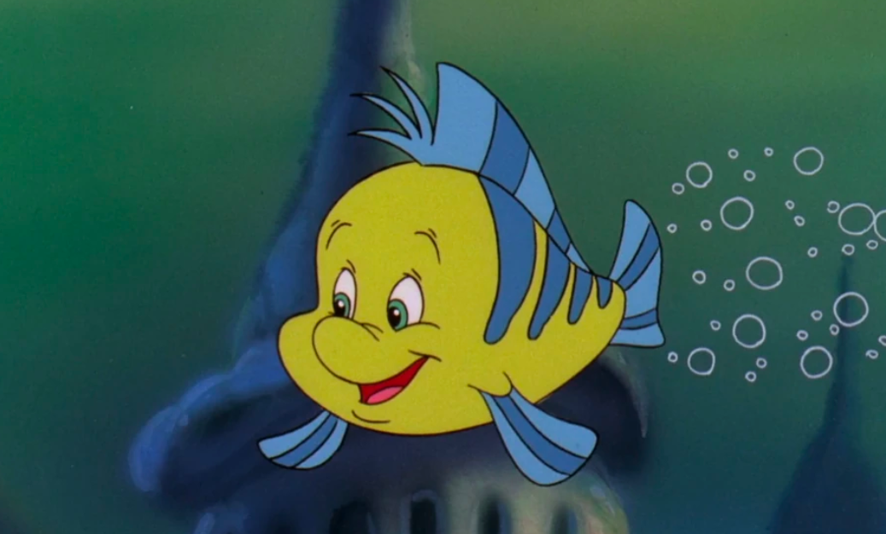

Welcome to Wisconsin Collegiate DECA!
For more than 60 years, Wisconsin Collegiate DECA has served its members and communities through professional development and community engagement.
See Us in Action

Why DECA?
Video Transcript
Speaker 1: Your future starts here!
[Montage begins: members in professional attire posing for pictures, networking, dancing, and holding trophies.]
[Speaker 1 professionally dressed speaking into a microphone in front of a DECA backdrop.]
Speaker 1: At Collegiate DECA, prepare for your career!
[On-screen text: Prepare for your career]
[Montage continues: members in professional attire posing for pictures, preparing for case studies, and giving a speech.]
[Speaker 2 professionally dressed speaking into a microphone in front of a DECA backdrop]
Speaker 2: Join a community!
[On-screen text: Join a community]
[Montage continues: members in professional attire cheering, waving, and holding their college's flag]
[On-screen text during montage: 4,500 Global Members]
[On-screen text during montage: 200+ Colleges & Universities]
[Speaker 3 professionally dressed speaking into a microphone in front of a DECA backdrop]
Speaker 3: Compete in over twenty-five events!
[Montage continues: members in professional attire presenting to judges]
[On-screen text during montage: Business Management and Administration]
[On-screen text during montage: Finance]
[On-screen text during montage: Entrepreneurship]
[On-screen text during montage: Hospitality & Tourism]
[On-screen text during montage: Marketing]
[Speaker 4 professionally dressed speaking into a microphone in front of a DECA backdrop]
Speaker 4: And discover new places!
[On-screen text: Discover new places]
[Montage continues: members in professional attire posing for pictures, cheering, and dancing]
[Speaker 5 professionally dressed speaking into a microphone in front of a DECA backdrop]
Speaker 5: DECA is an organization for everyone. No matter what major you are, what background you are, it's for you!
[On-screen text: Collegiate DECA is for you]
[Montage continues: members in professional attire dancing, networking, and holding medals and trophies]
[Speaker 6 professionally dressed speaking into a microphone in front of a DECA backdrop]
Speaker 6: Why should you join DECA? Well, to get career-ready, of course!
[On-screen text: Get career ready]
[Montage continues: members in professional attire preparing for case studies and giving a speech]
[Speaker 7 professionally dressed speaking into a microphone in front of a DECA backdrop]
Speaker 7: I came in here, not as a business major, but I've learned and grown in my business skills. And I'm hoping to take these skills into the rest of my life!
[Montage continues as Speaker 7 talks: members in professional attire at a conference giving speeches and working together]
[Speaker 8 professionally dressed speaking into a microphone in front of a DECA backdrop]
Speaker 8: Networking, meeting new people, is a great way to actually expand my skillset when it comes to the future. DECA has actually given me that opportunity to do that!
[Montage continues: Members in professional attire collaborating]
[On-screen text: Develop your inner circle]
[Speaker 3 professionally dressed speaking into a microphone in front of a DECA backdrop]
Speaker 3: The people in DECA is what made everything.
[Montage continues as Speaker 3 talks: Members in professional attire posing for pictures, giving pitches, networking, and collaborating]
Speaker 3: DECA provided me with like-minded individuals that help me grow and contribute by giving back to my community!
[On-screen text: Demonstrate your prowess in business]
[Speaker 9 professionally dressed speaking into a microphone in front of a DECA backdrop]
Speaker 9: This is a dream for a competitive person
[Montage continues: members in professional attire holding up their DECA glass]
[Speaker 10 professionally dressed speaking into a microphone in front of a DECA backdrop]
Speaker 10: I fell in love with competitions because I could be creative, but I could still learn business competitively
[Montage continues: Members in professional attire preparing for case studies and giving their pitches to judges]
[Speaker 11 professionally dressed speaking into a microphone in front of a DECA backdrop]
Speaker 11: Collegiate DECA is awesome because of the travel opportunities where you can travel and make friends with the students you're traveling with outside of the classroom
[Montage continues: Members in professional attire posing for pictures, dancing, and networking]
[On-screen Text: Create lifelong friendships]
[Speaker 6 professionally dressed speaking into a microphone in front of a DECA backdrop]
[On-screen text: Explore new cultures]
Speaker 6: Being able to travel to new places and explore different cultures has been such an amazing opportunity!
[Montage continues: members in professional attire collaborating and giving speeches]
[On-screen text: Grow as a Leader]
[Speaker 12 professionally dressed speaking into a microphone in front of a DECA backdrop]
Speaker 12: Something that draws me to DECA is the opportunity for growth. It enhances me as a person
[Montage continues as speaker 4 begins talking: Members in professional attire cheering and holding their DECA glass]
[Speaker 4 professionally dressed speaking into a microphone in front of a DECA backdrop]
Speaker 4: I would not be the person I am today, nor have the confidence that I do today, if it weren't for DECA!
[Montage continues: Members in professional attire cheering, holding their DECA glass, and dancing]
[Speaker 13 professionally dressed speaking into a microphone in front of a DECA backdrop]
Speaker 13: Once you become part of (the) DECA community itself, you will understand that it is altogether an experience that you will never get from joining any other organization!
[Montage continues: Members professionally dressed networking, posing with awards for pictures, collaborating, and dancing]
[Speaker 14 professionally dressed speaking into a microphone in front of a DECA backdrop]
Speaker 14: What are you waiting for?
[On-screen Text: Join Collegiate DECA]
Narrator: Join Collegiate DECA
[Fades into a DECA diamond over a DECA blue background]
[On-screen text: Collegiate DECA]
Wisconsin Member Spotlight
Celebrating the statewide impact of our Collegiate DECA members and leaders.
X
College
As ____'s VP of _____, X organized the first _____.
Y
College
Y took home first place in the _____ at ICDC, representing Wisconsin on the global stage.